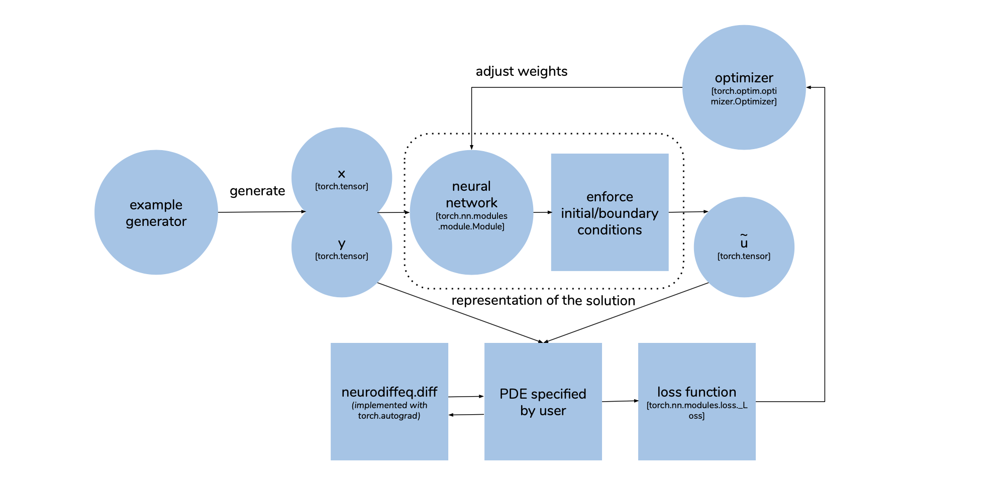

How Does It Work?¶
To solve a differential equation. We need the solution to satisfy 2 things: 1. They need to satisfy the equation 2. They need to satisfy the initial/boundary conditions
Satisfying the Equation¶
The key idea of solving differential equations with ANNs is to reformulate the problem as an optimization problem in which we minimize the residual of the differential equations. In a very general sense, a differential equation can be expressed as
where \(\mathcal{L}\) is the differential operator, \(u\left(x,t\right)\) is the solution that we wish to find, and \(f\) is a known forcing function. Note that \(\mathcal{L}\) contains any combination of temporal and spatial partial derivatives. Moreover, \(x\) is in general a vector in three spatial dimensions and \(u\) is a vector of solutions. We denote the output of the neural network as \(u_{N}\left(x, t; p\right)\) where the parameter vector \(p\) is a vector containing the weights and biases of the neural network. We will drop the arguments of the neural network solution in order to be concise. If \(u_{N}\) is a solution to the differential equation, then the residual
will be identically zero. One way to incorporate this into the training process of a neural network is to use the residual as the loss function. In general, the \(L^{2}\) loss of the residual is used. This is the convention that NeuroDiffEq follows, although we note that other loss functions could be conceived. Solving the differential equation is re-cast as the following optimization problem:
Satisfying the Initial/Boundary Conditions¶
It is necessary to inform the neural network about any boundary and initial conditions since it has no way of enforcing these a priori. There are two primary ways to satisfy the boundary and initial conditions. First, one can impose the initial/boundary conditions in the loss function. For example, given an initial condition \(u\left(x,t_{0}\right) = u_{0}\left(x\right)\), the loss function can be modified to:
where the second term penalizes solutions that don’t satisfy the initial condition. Larger values of the regularization parameter \(\lambda\) result in stricter satisfaction of the initial condition while sacrificing solution accuracy. However, this approach does not lead to exact satisfaction of the initial and boundary conditions.
Another option is to transform the \(u_{N}\) in a way such that the initial/boundary conditions are satisfied by construction. Given an initial condition \(u_{0}\left(x\right)\) the neural network can be transformed according to:
so that when \(t = t_0\), \(\widetilde{u}\) will always be \(u_0\). Accordingly, the objective function becomes
This approach is similar to the trial function approach, but with a different form of the trial function. Modifying the neural network to account for boundary conditions can also be done. In general, the transformed solution will have the form:
where \(A\left(x, t; x_{\text{boundary}}, t_{0}\right)\) must be designed so that \(\widetilde{u}\left(x,t\right)\) has the correct boundary conditions. This can be very challenging for complicated domains.
Both of these two methods have their advantages. The first way is simpler to implement and can be more easily extended to high-dimensional PDEs and PDEs formulated on complicated domains. The second way assures that the initial/boundary conditions are exactly satisfied. Considering that differential equations can be sensitive to initial/boundary conditions, this is expected to play an important role. Another advantage of the second method is that fixing these conditions can reduce the effort
required during the training of the ANN. NeuroDiffEq employs the second approach.
The implementation¶
We minimize the loss function with optimization algorithms implemented in torch.optim.optimizer. These algorithms use the derivatives of the loss function w.r.t. the network weights to update the network weights. The derivatives are computed with torch.autograd, which implements reverse mode automatic differentiation. Automatic differentiation calculates the derivatives base on the computational graph from the network weights to the loss, so discretization is not required. Here, our loss
function is a bit different from the ones usually found in deep learning in the sense that, it not only involves the network output but also the derivatives of the network output w.r.t. the input. This second kind of derivatives is computed with torch.autograd as well.
Most of the logic of the above-mentioned method is implemented in ode.solve and pde.solve2D functions. The following diagram shows the process flow of solving a PDE \(\mathcal{L}u - f = 0\) for \(u(x, y)\). The PDE is passed as a function that takes in \(x\), \(y\) and \(u\) and produces the value of \(\mathcal{L}u - f\). To specify the differential operator \(\mathcal{L}\), the user can make use of the function neurodiffeq.diff which is just a wrapper of
torch.autograd.grad. During each training epoch, a set of \(x\) and \(y\) is generated as torch.tensor. They are split into multiple batches. Each batch is used to make a little tweak to the network weights. In each iteration, a batch of \(x\), \(y\) are fed into the neural network, the output then transformed to impose the boundary conditions. This gives us the approximate solution \(\tilde{u}\). \(x\), \(y\) and \(\tilde{u}\) are then passed to the PDE
function specified by user to calculate \(\mathcal{L}\tilde{u} - f\) and the final loss function (the default is just \((\mathcal{L}\tilde{u} - f)^2\)). The optimizer then adjusts the network weights to better satisfy the PDE by taking a step to minimize the loss function. We repeat these steps until we reach the maximum number of epochs specified by the user.
